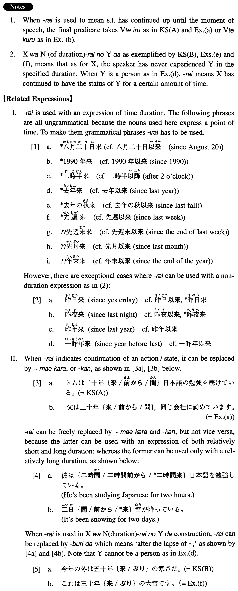

←
DoJG
→
来
(I. 343)
Example sentences
(ksa).
トムは二十年
来
日本語の勉強を続けている。
Tom has been studying Japanese for the past 20 years.
(ksb).
今年の冬は五十年
来
の寒さだ。
This winter is the coldest one in 50 years.
(a).
父は三十年
来
、同じ会社に勤めています。
My father has been employed in the same company for the past 30 years.
(b).
私はこの研究を十年
来
続けてきました。
I've been continuing this research for the past 10 years.
(c).
夜半
来
の雨が、ようやく上がったようだ。
The rain which started after midnight appeared to have finally stopped.
(d).
僕と岡田とは四十年
来
の友人だ。
Okada and I have been friends for the past 40 years.
(e).
今年の夏は六十年
来
の暑さだそうだ。
They say that this summer is the warmest in 60 years.
(f).
これは三十年
来
の大雪です。
This is the heaviest snow we have had in 30 years.
Formation
(i)
Noun (duration)
来
三十年
来
For the past 30 years
(ii)
Noun (duration)
来
六十年
来
の大地震
The strongest earthquake in 60 years
